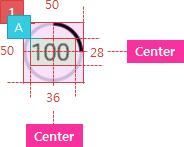
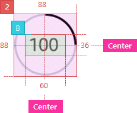
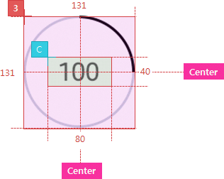
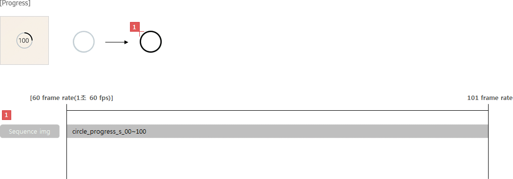
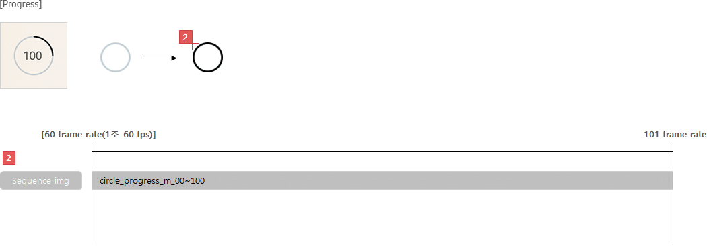
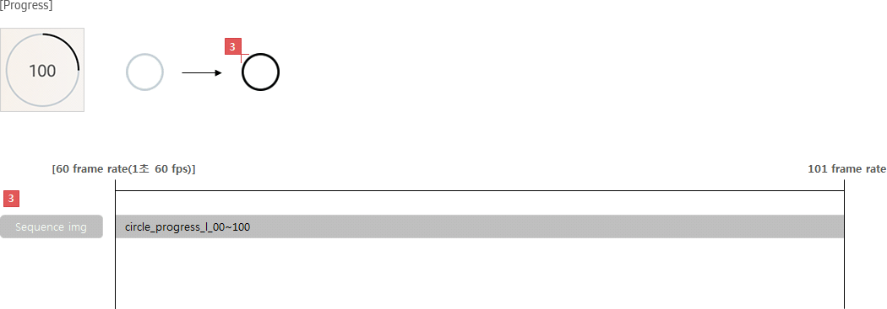
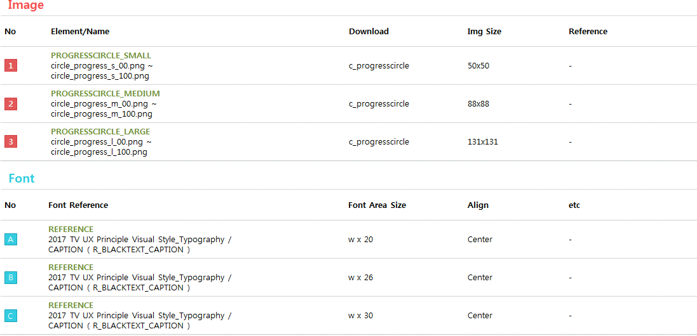

C_PROGRESSCIRCLE
- Definition
-
Use this to show the ongoing status with a circle. This is useful to display the progress status on a circle icon.
- Usage
-
- - When displaying progress rate, it is recommended to use progress circle.
- - Use progress bars or progress circles to show the progress rate, depending on the screen layout.
- - Place the number on the center of circle icon.
- Interaction
-
- Status
-
- - Determinate : This is displayed when it's predictable to estimate how much time will take.
- - Indeterminate : This is displayed when it's unpredictable to estimate how much time will take.
- - Buffer : This is displayed when it's necessary to show the buffering status.
- How to change the status
-
- - Indeterminate and Determinate : This is displayed when the processing time was unpredictable first but becomes predictable later.
- - Determinate and Indeterminate : This is displayed when processing time was predictable first but becomes unpredictable later (e.g. app download and installation).
- Specs
-
- Properties
-
- Progress circle consists of the following elements:
-
- 1. Circle (Mandatory)
- 1. Text (Optional, default = none)
-
- - Display text information as progress value
- Property Table
-
| C_PROGRESSCIRCLE |
|
PROPERTY
|
USE
|
VALUE
|
| Circle icon |
◎ |
- |
| Text |
|
<<value>> |
- Visual
-
- GUI
-
- C_PROGRESSCIRCLE_WHITESMALL
- 
- C_PROGRESSCIRCLE_WHITEMEDIUM
- 
- C_PROGRESSCIRCLE_WHITELARGE
- 
- Motion
-
- C_PROGRESSCIRCLE_SMALL
- 
- C_PROGRESSCIRCLE_MEDIUM
- 
- C_PROGRESSCIRCLE_LARGE
- 

- *Tags :
-
Progress Bar,
Loading